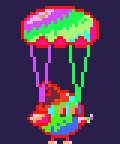
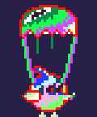
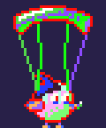
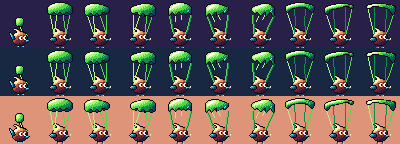

Each 8 frames, 32 x 32 cell, rival flier palette. Sheets shown 3x on a grey panel.



Left column: rival with its gum, for scale. Then A, B, C, each at centre, far left, far right. Rows: dusk, moon, a light sky.
